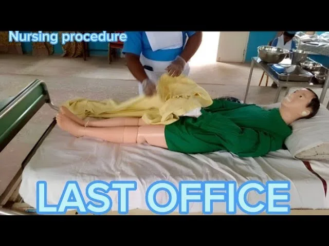
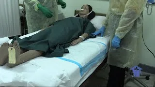
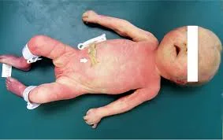

Expanded Nursing Uganda Explanation
Last Office should be understood beyond a short definition. Link the concept to patient history, focused assessment, common risks, nursing priorities, documentation and evaluation of outcomes.
Contents — 14 sections (tap to expand)
01 Objectives:
- Define the term last offices .
- Perform preliminary steps of last offices.
- Identify the requirements for carrying out last offices.
- Prepare the requirements for carrying out last offices.
- Perform procedure of first phase of last offices.
02 Definition:
Last offices (also known as post-mortem care or care of the deceased) is the care given to a deceased person to ensure a clean body and maintain dignity, respect, and prepare the body according to cultural, religious, and legal requirements.
Aims:
- To prepare the deceased for mortuary or a funeral home or morgue (a place where dead bodies are kept pending identification, autopsy or burial.
- To minimize any risk of cross infection to relatives, health care workers or persons who may need to handle the deceased.
03 Requirements:
Trolley (Top Shelf):
- Two jugs of warm and cold water
- Small tray with: Soap in a dish
- Nail brush
- Vaseline or lubricant
- Comb
- Nail cutter
- Pair of scissors
- 2 Receivers (kidney dishes)
- Dissecting forceps (or artery forceps) - often for packing orifices
- Mortuary labels with tapes (at least 3 - wrist, toe, and shroud)
- A roll of toilet paper (or cotton wool)
- Brown cotton wool in a bowl (for packing orifices) - Note: Brown cotton wool is less common now; plain cotton wool or gauze is typically used.
- Dressing pack (or sterile pack with swabs)
- Flannels (or washcloths)
- Antiseptic lotion
- Jik (or other disinfectant for surfaces/equipment)
Trolley (Bottom Shelf):
- Plastic apron
- 2 pairs of clean sheets (one for the bed, one for the shroud)
- Dressing mackintosh and sheets
- A pair of mortuary sheets (or shroud/body bag)
- Strapping and sticking plaster (adhesive tape/bandage)
- Notification of death forms
- Bottle of antiseptic lotion (for washing body)
- 2 buckets (one containing disinfectant solution for contaminated items)
Bedside:
- Hand washing equipment (access to sink, soap, water, towel)
- Screens (for privacy)
- Bucket for wastes (clinical and general)
- Dirty linen container
- Deceased Burial Clothes: Clean sheets
- Dressing clothes as preferred by family/culture (e.g., Men - underwear, trousers, shirt, coat, tie; Traditional wear according to culture or religion).
- Diapers/pads (if needed)
04 Procedure (Preliminary Steps & First Phase):
- Steps Action Rationale
- 1. Observe the general rules . Promotes adherence to standards and patient safety/dignity.
- 2. Confirm the patient has ceased breathing and check for absence of pulse, heart sounds, and pupillary reflexes. Note the exact time of death . To confirm death and for legal and documentation purposes. Ensures timely attendance by the medical team.
- 3. Notify the In-charge or Doctor immediately as soon as the patient ceases to breathe. To confirm death and for legal purposes. Ensures timely attendance by the medical team.
- 4. Provide a calm and respectful environment . Remove excess equipment from around the bed. Close adjacent windows and screen the bed/room for privacy . To promote serenity in the ward, respect the dignity of the deceased, and provide privacy for the procedure and the remaining patients/staff.
- 5. Inform the relatives or next of kin about the death with empathy and counsel them appropriately. Allow relatives time to be with the deceased if desired, providing them with privacy and support. Request relatives to bring burial clothes if applicable. Ask about cultural/religious preferences for handling the body. To support the grieving family , fulfill emotional needs, and gather information about specific requests or cultural/religious practices for handling the body.
- 6. Remove any jewelry, necklace, watches, or other valuables that have been worn by the deceased. Document these items carefully and hand them over to the next of kin or store them according to hospital policy, obtaining signatures on an accountability book/form. To prevent loss of personal effects and ensure proper handling and accountability.
- 7. Remove any tubes, catheters (e.g., IV lines, NG tubes, urinary catheters, drainage tubes) as per policy or doctor's order. Clamp or tie off puncture sites. Note : If a medico-legal case, tubes may need to remain in situ. To prepare the body for cleaning and dressing and to prevent leakage from sites. Prevents misinterpretation in medico-legal cases.
- 8. Stop any running IV infusions . Not applicable after death.
- 9. Put on protective wear (plastic apron, gloves). To prevent cross-infection and protect staff from contact with body fluids.
- 10. Strip the bed of soiled linen , carefully removing and placing it in the dirty linen container. If the body has soiled the bed, place a clean sheet under the body. If infectious disease, decontaminate linen in an antiseptic solution before sending to laundry. To maintain cleanliness of the environment and prevent spread of infection.
- 11. Clean the body thoroughly , providing a full wash (refer to Bed Bath procedure 5.1), paying attention to all areas. If necessary, shave the face (for males) or comb/style hair as preferred by the deceased or next of kin. To ensure the body is clean and presentable , respecting the dignity of the deceased. To maintain good memories for the family.
- 12. Final Care Given to the deceased : Laying out of the deceased is done with respect and according to the dead person's religious rights and cultural values . - Straighten the upper limbs and tie the lower limbs together at the big toes (ankles) with a bandage or piece of soft material. - Close the eyes gently if they cannot remain closed; place a wet swab over the eyelids if needed. - Close the mouth ; if necessary, place a small rolled towel under the chin or use a bandage around the head and chin to keep the mouth closed. Dentures should be left in place if possible. - Pack orifices (mouth, nostrils, anus, vagina in females) with cotton wool or gauze using forceps to prevent leakage of body fluids. Ensure packing is not visible. This is for continuity of respect of human beings even after death. To allow correct body alignment before rigor mortis sets in. To create a natural, peaceful appearance . To prevent soiling of the linen and body from natural discharges.
- 13. Dress the body in clean clothes or the burial clothes provided by the family, according to cultural/religious practices. If burial clothes are not available or used, use a clean shroud or mortuary sheet/body bag. To respect the dignity of the deceased and prepare the body for viewing or transfer.
- 14. Place a clean sheet over the body, covering up to the neck or as appropriate for cultural/religious viewing. To maintain modesty and dignity.
- 15. Fill out the mortuary labels with the particulars: name, age, date and time of death, ward, next of kin, any specific instructions (e.g., infectious precautions). Attach one label to the wrist, one to the ankle/toe, and one to the shroud/body bag. To ensure accurate identification of the deceased for legal and administrative purposes.
- 16. Assist with transferring the body to the mortuary trolley or body bag as per policy. To prepare the body for transfer.
- 17. Transport the body to the mortuary securely and respectfully . Ensures safe custody and transfer.
- 18. Document the procedure fully , including the time of death, time last offices were completed, care given, items removed (valuables, tubes) and their disposition, persons notified, and any specific instructions or cultural considerations followed. For continuity of care , monitoring, and legal record .
- 19. Clear away and disinfect all used equipment, surfaces (bed, locker, floor), and the room as per terminal disinfection policy. Dispose of waste appropriately. Wash hands . To prevent the spread of infection and maintain a clean environment.
05 Points to Remember (Adult Last Offices):
- Maintain a calm, quiet, and respectful atmosphere throughout the procedure.
- Always handle the deceased body gently and with dignity .
- Be sensitive to the cultural and religious beliefs of the patient and family regarding death and body preparation. Consult with the family or spiritual advisors if unsure.
- If the death is a medico-legal case , follow specific protocols regarding removal of tubes, handling of clothing, and notification of authorities.
- Ensure proper identification of the body with labels before transfer to the mortuary.
- Wash hands thoroughly before and after the procedure.
- Terminal disinfection of the patient's unit is essential.
06 Objectives:
- Define the term perinatal mortality .
- Display the ability to break news of death and counsel the parents of a deceased baby.
- Identify the requirements for carrying out last office to a deceased new born baby.
- Prepare the requirements for carrying out last office to a deceased new born baby.
- Perform last office of the deceased new born baby.
07 Definition:
Perinatal mortality is the death of a baby in the first 28 days of life, including stillbirths (death before birth after 28 weeks gestation).
08 Requirements (Perinatal Death):
Additional requirements to adult last office requirements:
- Baby clothes (as provided by parents/family)
- Diapers (or pads)
- Small artery forceps (for packing orifices)
- Small blanket or receiving cloth (for wrapping the baby)
- Mortuary label (specifically for stillbirths/neonates)
09 Procedure (Last Office in Perinatal Death):
- Steps Action Rationale
- 1. Observe the general rules . Promotes adherence to standards .
- 2. Communicate the news of the death to the mother and father empathetically, providing privacy and support. Counsel them appropriately about the cause of death (if known) and the next steps. To initiate coping mechanism and support the parents through their grief .
- 3. If the death was an intra-uterine fetal death (stillbirth), inform the mother and next of kin of what has happened and the next steps (e.g., delivery process). To provide necessary information and prepare the parents for the process ahead.
- 4. Ask the parents if they would like to see, hold, and spend time with the baby . Handle the baby gently and wrap in a clean cloth. Remove any tubes or lines. Wash hands and put on protective wear (gloves). To allow parents to bond with their baby , initiate the grieving process , and create memories . Maintains hygiene and safety.
- 5. Ask the parents if they would like to take a photo of their dead baby. A photo can be used for future remembrance and healing.
- 6. Bathe the baby gently with warm water and mild soap. Dry thoroughly with a soft towel. To provide a clean body , respecting the dignity of the deceased baby, and create a descent appearance.
- 7. Pack all orifices (mouth, nostrils, anus, and vagina if applicable) with cotton wool or gauze using small forceps. Ensure the packing is not visible. Apply a diaper. Packing reduces the risk of soiling the linen and body from natural discharges and prevents the spread of infection . Maintains cleanliness and dignity.
- 8. Dress the baby fully in the clothes provided by the parents or in clean hospital clothes. Wrap the baby completely in a clean blanket or receiving cloth. To make the baby presentable , respect the parents' wishes, and provide a sense of comfort and completeness.
- 9. Fill the mortuary label with the necessary particulars: baby's name (if given), mother's name, date and time of birth (if born alive), date and time of death, sex, state if stillbirth or not, ward name. Attach the label securely to the baby's wrist or ankle. To ensure accurate identification of the deceased baby for legal, administrative, and ethical purposes.
- 10. Ask the mother and next of kin where the body is to be kept or sent (e.g., mortuary, specific location as per cultural practice). Inform them of the process for collecting the body. Promotes safe custody and transfer, builds confidence in the parents/next of kin, and ensures legal/cultural requirements are met.
- 11. Take the body to the mortuary well labeled, or hand over to the designated person according to policy/request, obtaining signatures on a handover form/accountability book. Enables identification and for ethical and legal purposes. Ensures accountability for the body.
- 12. Clear away and disinfect all used equipment and the environment as per policy. Dispose of waste appropriately. Wash hands . To prevent spread of infection and maintain cleanliness.
- 13. Document the procedure completely , including the time of death, time last offices were completed, care given, interactions with parents (seeing/holding baby, photos taken), disposition of the body, and any specific cultural considerations followed. For continuity of care , monitoring, and legal record . Essential documentation for perinatal deaths.
10 Points to Remember (Perinatal Death):
- Be exceptionally sensitive, supportive, and compassionate when caring for parents experiencing perinatal loss.
- Allow parents adequate time to see and hold their baby if they wish. This is a vital part of the grieving process .
- Provide privacy for the family. Ideally, the last offices for a perinatal death should be performed in a separate room, not in the main ward where other mothers with babies are present.
- Ensure the environment is quiet and conducive to grieving.
- Handle the baby gently and with the utmost respect throughout the procedure.
- Follow hospital policy and cultural/religious practices regarding the disposition of the body.
- Minimize psychological trauma for the mother and family.
- Ensure appropriate follow-up support is offered to the parents.
11 Nursing Uganda Clinical Lens
Use Last Office as a practical nursing topic, not only a memorized definition. Turn the topic into practical nursing knowledge: meaning, assessment, care priorities, teaching and evaluation.
- What to understand first: define last office, identify the normal or expected pattern, then explain what changes when the patient is unwell.
- Why it matters in care: the nurse must recognize risk early, explain findings clearly, document accurately and know when to escalate.
- How to revise it: connect each point to assessment, nursing diagnosis or care problem, intervention, rationale and evaluation.
12 Assessment Guide
- Key definitions, patient history, focused observations and risk factors.
- Findings that are normal, abnormal or urgent.
- Resources, referral needs and documentation requirements.
13 Nursing Priorities, Rationales and Outcomes
- Protect safety, comfort, dignity and infection prevention.
- Provide clear care, education and escalation when needed.
- Evaluate response and record what changed.
The rationale for these priorities is patient safety: nursing actions should prevent deterioration, reduce discomfort, support recovery and create clear evidence for the next caregiver.
- Expected outcome: The topic is understood in a way that supports safe nursing judgement and revision.
14 Patient Teaching and Revision Check
- Explain last office in simple language the patient or caregiver can repeat back.
- Teach warning signs, medicine or follow-up instructions, hygiene or lifestyle points where relevant.
- For exams, prepare a short answer using: definition, causes or risk factors, signs, assessment, management, complications and prevention.
- For ward practice, document baseline findings, actions taken, patient response and the plan for review.
Illustrations and Diagrams (4)




Related Video Lectures
Watch nursing lecture videos on YouTube for this topic. Opens in a new tab.
Watch on YouTubeExternal link: YouTube may use its own cookies and terms. Nursing Uganda is not affiliated with YouTube.